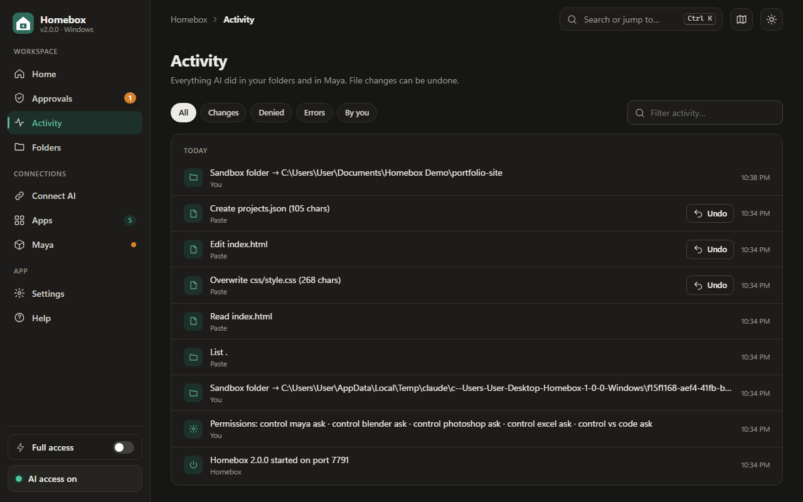

Undo, backups and Git: a safety net for AI-made changes
Letting AI change your files is much less stressful when you know you can always go back. Homebox has Undo built in, but it helps to understand exactly what it covers and when a second safety net, like Git or a plain backup, is worth adding.

How Homebox Undo works
Before the AI changes a file, Homebox copies the current version into its own backup folder. Undo puts that copy back. It covers:
- Writing or editing a file: Undo restores the previous content, or removes a newly created file.
- Creating a folder: Undo removes it again (if it's still empty).
- Moving or renaming: Undo moves it back.
- Deleting: Homebox backs up the whole file or folder first, and Undo restores it exactly.
What Undo doesn't cover
- Commands. A command can do anything, so Homebox can't back up its effects. Read commands carefully before approving.
- App scripts. Inside Maya, Blender, Houdini, 3ds Max, Nuke, Unreal, Word and AutoCAD, each AI step is one undo step in that app, so use the app's own Ctrl+Z. Excel and PowerPoint can't undo script changes at all.
- Old sessions. Activity from before Homebox last started is shown for reference, but can't be undone from the list.
Add Git for code projects
If your sandbox is a code project, Git is the best second safety net. Commit before each AI session:
git add -A git commit -m "Before AI session"
After the session, git diff shows exactly what changed, line by line, and git restore . (or git checkout -- . in older Git) throws away everything the AI did. With VS Code connected, the Source Control view shows the same thing visually.
Homebox never lets the AI read .git/config, which can contain credentials, but the AI can still see your normal files.
Backups for everything else
For design files, documents and 3D scenes, a simple habit works: before a big session, copy the project folder (or let your cloud drive keep version history). For apps that can't undo scripts, like Excel and PowerPoint, save a copy first.
A routine that works
- Commit or copy your project.
- Give the AI a clear, limited task. See How to write tasks AI can finish on its own.
- Review approvals, or watch the Activity page if Full access is on.
- At the end, review the changes (Activity page or
git diff) and keep or undo them.
Common questions
Where are Homebox's backups kept?
In the .homebox\snapshots folder in your user folder, on your own computer. They're never uploaded anywhere.
Can I undo something from yesterday?
The Undo buttons cover changes made since Homebox last started. For anything older, use Git or your own backups. That's one more reason to commit before each session.
Does Undo work if I edited the file afterwards?
Undo puts back the version from before the AI's change, so any edits you made after that are replaced too. If you've edited a file since, copy your edits somewhere first.